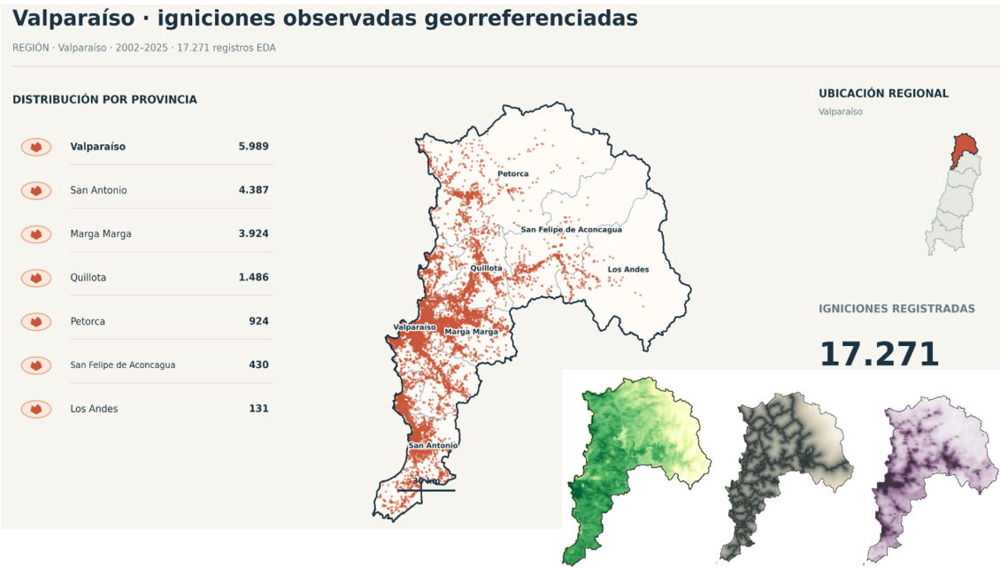
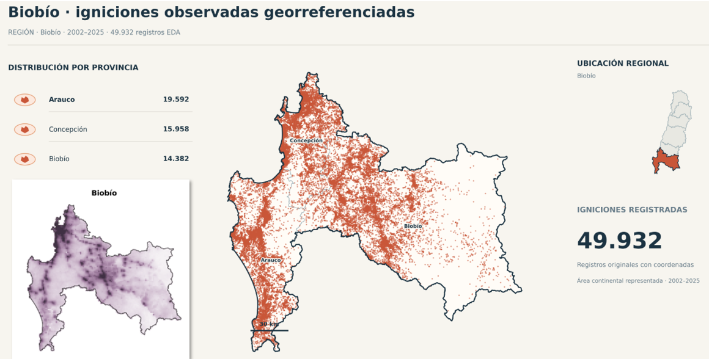
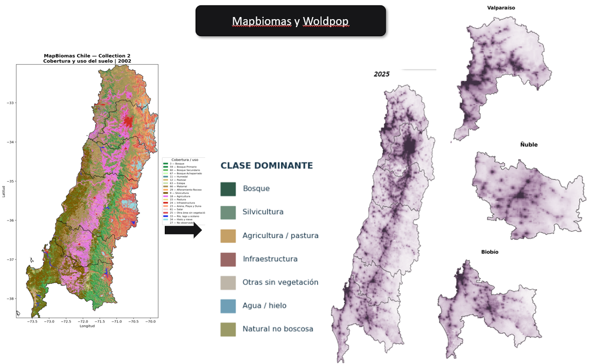

Distribución territorial
¿Cómo cambia la distribución espacial de las igniciones entre distintas regiones y provincias?
Investigación aplicada · Estadística espacial
Tesis de pregrado · Investigación en desarrollo
Mediante procesos de Cox log-gaussianos (LGCP)
Investigación orientada a caracterizar y modelar la ocurrencia espacio-temporal de igniciones forestales en Chile central y centro-sur, integrando información ambiental, territorial y antrópica mediante herramientas de estadística espacial y modelamiento bayesiano.
01 / Contexto
La ocurrencia de incendios forestales presenta heterogeneidad espacial y temporal asociada a factores meteorológicos, características de la vegetación, condiciones topográficas y actividades humanas.
Esta investigación estudia las igniciones como eventos distribuidos en el espacio y el tiempo, utilizando procesos puntuales y modelos estadísticos capaces de representar variaciones de intensidad e incertidumbre.
El objetivo es evaluar el aporte de modelos de Poisson y procesos de Cox log-gaussianos para caracterizar patrones de ignición mediante información georreferenciada y covariables explicativas.
¿Cómo cambia la distribución espacial de las igniciones entre distintas regiones y provincias?
¿Qué relación presentan las igniciones con las condiciones ambientales, la cobertura del suelo y las variables antrópicas?
¿Qué variación espacial y temporal adicional puede representar un proceso de Cox log-gaussiano?
Valparaíso
17.271Registros georreferenciados del EDA
Biobío
49.932Registros georreferenciados del EDA
Período de las figuras
2002–2025Ventana del análisis exploratorio presentado
02 / Análisis exploratorio espacial
Visualizaciones de los registros observados en las regiones de Valparaíso y Biobío, incluyendo su distribución provincial y localización espacial.
Igniciones observadas · 2002–2025

Registros georreferenciados del análisis exploratorio, con desagregación provincial. La figura presenta 17.271 registros para el período 2002–2025.
Igniciones observadas · 2002–2025

Representación de 49.932 registros observados para el período 2002–2025, con distribución en las provincias de Arauco, Concepción y Biobío.
03 / Integración de información territorial
El modelamiento incorpora información espacial auxiliar para estudiar la heterogeneidad de la intensidad de igniciones.
Cobertura de suelo y distribución poblacional

Representación de la cobertura y uso de suelo mediante MapBiomas y de la distribución espacial de población mediante WorldPop. Estas fuentes permiten construir variables territoriales relevantes para el análisis de igniciones.
Variables asociadas a condiciones atmosféricas que pueden influir en la ocurrencia de igniciones.
Fuente de referencia: ERA5-Land
Caracterización del territorio según cobertura, uso del suelo y propiedades asociadas a la vegetación.
Fuente de referencia: MapBiomas
Factores relacionados con distribución poblacional, accesibilidad e infraestructura territorial.
Fuentes: WorldPop y cartografía vial
Representación de las condiciones del relieve y sus características espaciales.
Fuente: modelos digitales de elevación
04 / Metodología
La investigación utiliza herramientas de estadística espacial para modelar la intensidad de eventos y representar variación no explicada por las covariables.
Registros georreferenciados y fuentes auxiliares.
Limpieza, homologación e integración espacial.
Construcción de predictores ambientales y antrópicos.
Poisson inhomogéneo y proceso LGCP.
Diagnóstico, comparación y validación de modelos.
Modelo de referencia
Permite representar una intensidad de eventos que cambia con la ubicación y las covariables explicativas.
Constituye una referencia estadística para comparar la capacidad explicativa y predictiva frente a formulaciones con efectos latentes.
Modelo principal
El LGCP permite representar la intensidad mediante covariables y un campo aleatorio gaussiano latente, incorporando heterogeneidad espacial no observada.
Su implementación bayesiana contempla aproximaciones mediante INLA y la representación espacial SPDE.
Formulación estadística conceptual
log(μᵢₜ) = log(Eᵢₜ) + β₀ + Σ βₖxᵢₜₖ + wᵢₜ
En una representación discretizada, μ corresponde al conteo esperado, E a la exposición, β a los parámetros de regresión y w al efecto latente espacio-temporal.
Expresión general de referencia. La especificación definitiva depende del soporte espacio-temporal y de la estructura utilizada en el ajuste.
05 / Evaluación estadística
El proceso de evaluación contempla medidas de ajuste, desempeño predictivo y representación de la incertidumbre asociada a los modelos.
Comparación entre frecuencias observadas y esperadas mediante métricas de error y diagnóstico del ajuste.
Evaluación de la capacidad para distinguir unidades con y sin eventos registrados, según la definición de la tarea predictiva.
Análisis de parámetros, efectos espaciales latentes e incertidumbre posterior asociados al modelo LGCP.
06 / Difusión académica

Vinculación académica
Instancia de encuentro académico de la comunidad estadística, realizada entre el 20 y el 23 de octubre de 2026 en la Universidad de Valparaíso.
La participación en actividades científicas forma parte del desarrollo profesional y de la comunicación de investigaciones estadísticas aplicadas.
07 / Herramientas
Procesamiento de información, análisis exploratorio y visualización de datos espaciales.
Formulación y aproximación bayesiana para modelos con estructura espacial latente.
Representación de campos aleatorios espaciales mediante aproximaciones numéricas.
Integración de capas territoriales, sistemas de coordenadas, cartografía y datos raster/vectoriales.
Continuar explorando
Explora otros proyectos de modelamiento, ciencia de datos e investigación.